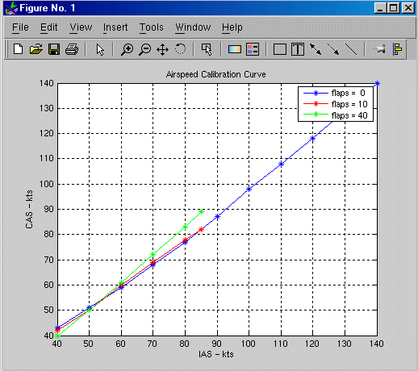

Calculate True Airspeed from Indicated Airspeed
This demonstration shows how to use Ideal Airspeed Correction block to compute true airspeed from indicated airspeed.
True airspeed is the airspeed that we would read ideally (and the airspeed value easily calculated within a simulation). However there are errors introduced throught the pitot-static airspeed indicators used to determine airspeed. These measurement errors are
Density Error
It is a fact that an airspeed indicator reads lower than true airspeed at higher altitudes.
This is due to lower air density at altitude. When the difference or error in air density
at altitude from air density on a standard day at sea level is applied to true airspeed, it
results in equivalent airspeed (EAS). Equivalent airspeed is true airspeed modified with
the changes in atmospheric density which affect the airspeed indicator.
Compressibility Error
Air has a limited ability to resist compression. This ability is reduced by an increase in
altitude, an increase in speed, or a restricted volume. Within the airspeed indicator, there
is a certain amount of trapped air. When flying at high altitudes and higher airspeeds, calibrated
airspeed (CAS) is always higher than equivalent airspeed. Calibrated airspeed is equivalent
airspeed modified with compressibility effects of air which affect the airspeed indicator.
Calibration Error
The airspeed indicator has static vent(s) to maintain a pressure equal to atmospheric pressure
inside the instrument. Position and placement of the static vent along with angle of attack and
velocity of the aircraft will determine the pressure inside the airspeed indicator and thus the
amount of calibration error of the airspeed indicator. Needless to say, calibration error is specific
to a given aircraft design. A calibration table is usally given in the pilot operating handbook (POH)
or in other aircraft specifications. Using this calibration table, the indicated airspeed (IAS) is
determined from calibrated airspeed by modifing it with calibration error of the airspeed indicator.
Indicated airspeed is displayed in the cockpit instrumentation.
Double-click on the yellow block at the bottom of the Simulink diagram to open an M-file that contains airspeed calibration curves for this demonstration.
